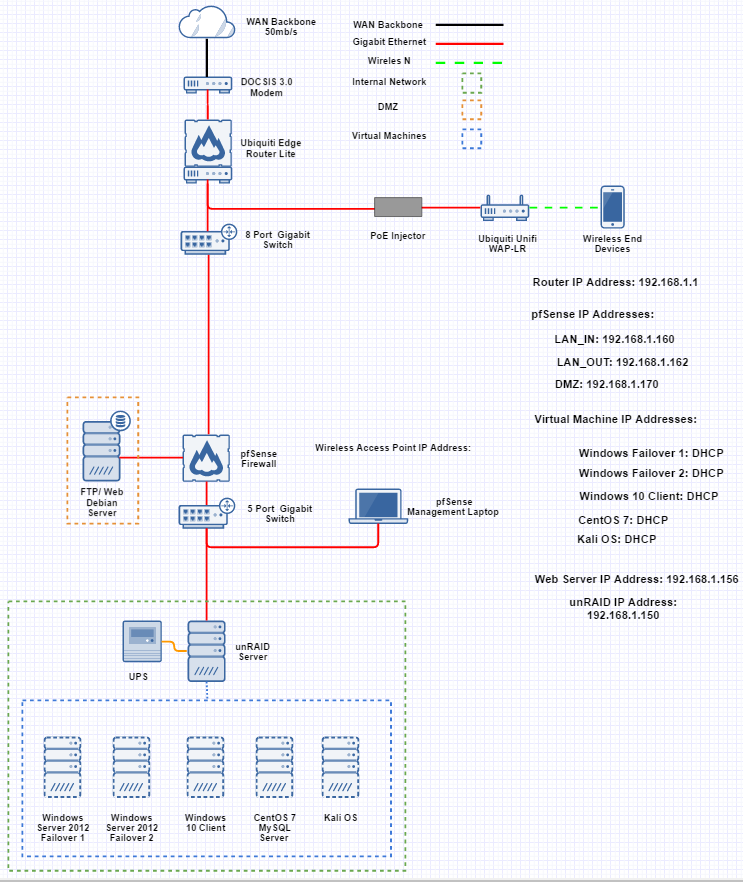

What I Did
Better question would be, what didn't I do? the work load we set for ourselves was huge. To start the project, I installed multiple NICs in the rackmount ATX server I had knocking about, and then installed CentOS as the NOS of choice. A raspberry pi was used as the FTP server and the web server. I made up the name "South Yorkshire International Bank" we'd be using for our fictional bank network scenario. I created the logo and the website for our bank and set it up on the pi (we bought the domain syib.online for demonstration purposes). we also had a Wi-Fi code generator which we did a mock-up of as a terminal customers would visit to generate their one time use Wi-Fi access code to use in branch. pfSense was installed on the rack server and we configured the WAN, LAN and DMZ lines for our network. On pfSense, we installed Snort for intrusion detection, which we then demonstrated by using Kali Linux to launch a hail mary attack at our network. I will link to the write-up we did below, it's worth a read for the full information should you be interested enough.
The Results
I got an excellent grade for this project, I believe my grade for this was 90%, which honestly still seemed kind of low compared to the hours put in, but that's just me. When presenting our work and live demonstrations to the class, we got some great feedback and actually held their attention throughout (something most groups failed at I'm afraid). I remember when we did our Windows Server presentation the previous semester before this, when we were vacating the room (so we could be graded by the class) we heard people whispering about how they neeeded to redo their own presentations to reach the standard of ours. I think we surpassed that presentation even more with this project.
-Read The Writeup-


Made with by Max Ingham